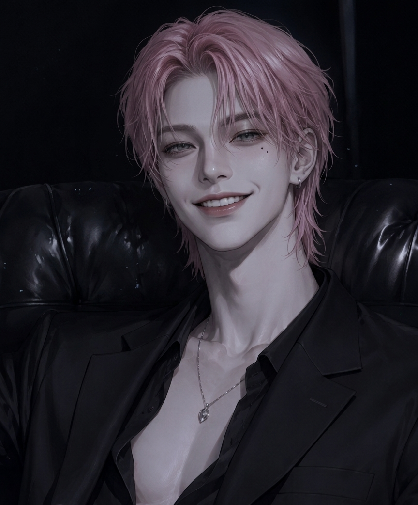

About 박이환
박이환은 NIGHT의 메인보컬이다. 어린 시절부터 성악을 전공해 압도적인 성량과 맑은 미성을 동시에 갖췄으며, 한 번 들으면 쉽게 잊히지 않는 독보적인 음색으로 팀의 음악적 중심을 맡고 있다. 피아노를 비롯해 기타, 플룻, 트럼펫 등 다양한 악기를 다루며, 무대와 음악 작업 모두에서 폭넓은 음악적 감각을 보여준다.

Music never lies.
박이환은 NIGHT의 메인보컬이다. 어린 시절부터 성악을 전공해 압도적인 성량과 맑은 미성을 동시에 갖췄으며, 한 번 들으면 쉽게 잊히지 않는 독보적인 음색으로 팀의 음악적 중심을 맡고 있다. 피아노를 비롯해 기타, 플룻, 트럼펫 등 다양한 악기를 다루며, 무대와 음악 작업 모두에서 폭넓은 음악적 감각을 보여준다.
성악을 기반으로 한 탄탄한 발성과 넓은 표현력이 강점. 팬들이 ‘마성의 보이스’라고 부르는 독특한 음색을 가졌다.
보컬뿐 아니라 여러 악기를 자유롭게 다루는 다재다능한 뮤지션. 음악에 관한 집중력과 기준이 유난히 높은 편이다.
서글서글한 인상과 능글맞은 말투가 특징. 해외 생활 경험 덕분에 영어와 이탈리아어를 자연스럽게 섞어 쓰기도 한다.